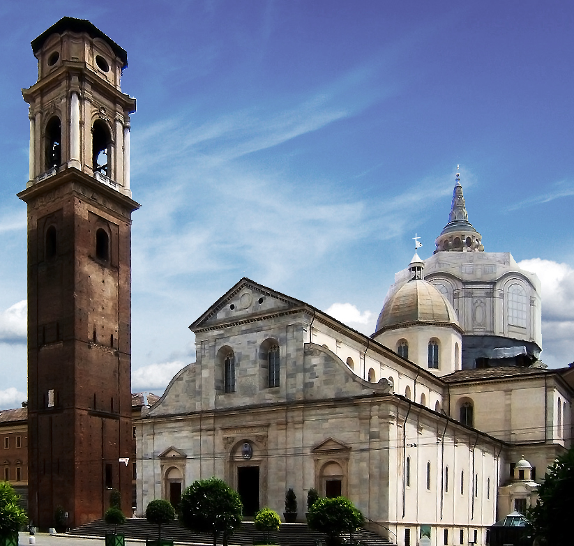

La Sindone de Turin es un lienzo de lino de aproximadamente 4.41 mts. de largo y 1.13 mts de ancho. En
la tela
se puede apreciar la figura de
un hombre desnudo, con manchas de sangre en todo el cuerpo. Otra cosa notable son marcas simetricas y
paralelas
que se encuentran a los lados de la figura central, son quemaduras que fueron consecuencia de
un incendio en 1532 en Chambery, Francia
Se encuentra actualmente en la Catedral de San Juan Bautista en Turin, Italia desde 1578, y solo se
realiza una
ostencion (excibicion publica del lienzo) cuando el papa lo autoriza o en los años santos (cada 25 años)

Segun la tradicion cristiana este es uno de los lienzos usados en la sepultura de Jesucristo despues de
su
crucifixion, y que al momento de su resurreccion su imagen quedo grabada en la tela